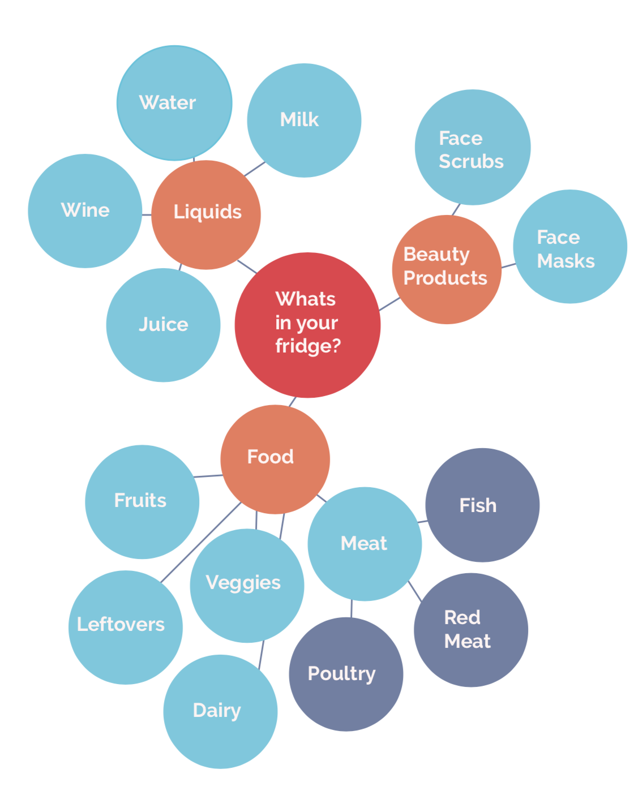
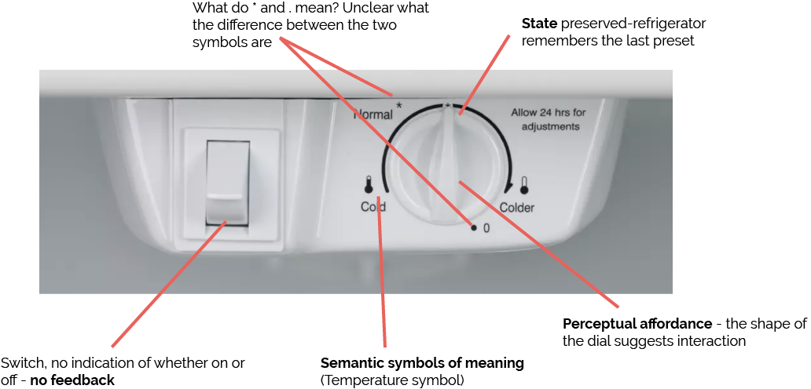
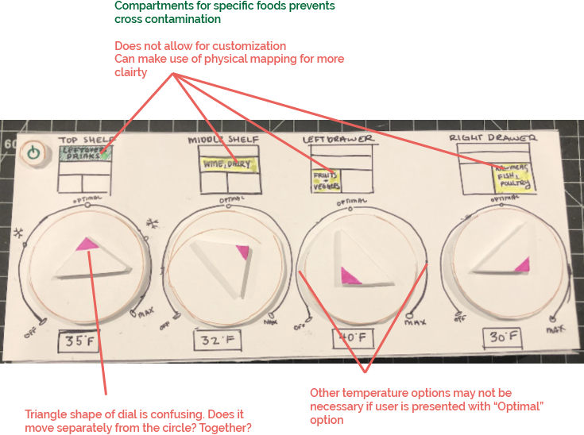
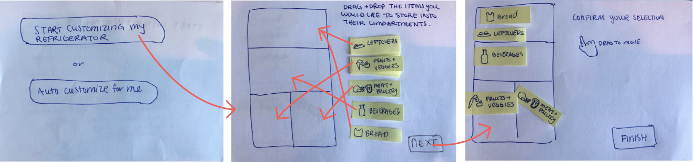
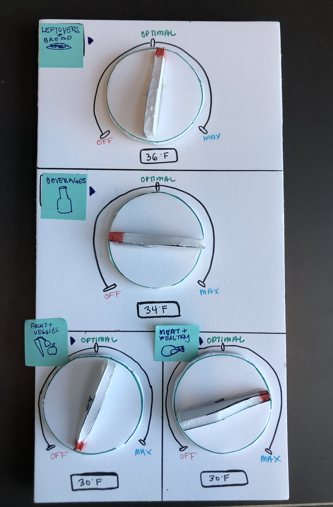
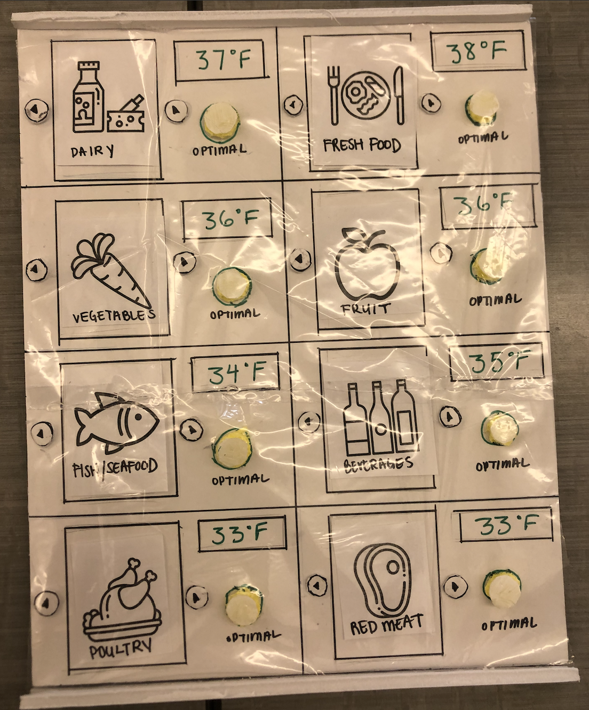

Creating a commerical refrigerator temperature control for safe food storage to prevent cross contamination.
Using the left and right arrow keys, the user is able to select the type of food they want to store in that specific section. Forcing users to only choose one item rather than a mix of items prevents cross contamination between different food groups. For restaurants, storing chicken and vegetables in the same compartment can a main driver behind customer satisfaction and health.
Keeping the environment of a kitchen in mind, I decided to use flatter controls like buttons. The intention was to create flat, concaved buttons in the rounded shape of a finger tip to suggest interaction.
Another addition to the final iteration is the plastic membrane that covers the control. At a restaurant, prep chefs and workers are constantly touching the control. From setting the temperature to grabbing food, the surface of the control is going to get dirty on a daily basis. Introducing the plastic membrane that can be easily removed and washed eases the busy kitchen routine.
One final change was removing different temperature options. Feedback helped inform this choice. One person mentioned that she would never use the other temperature settings if “Optimal” is already presented to her. If I had more time to iterate this control, I would try to find a unique way to highlight “Optimal” as the most important button, but also allow the users to adjust the temperature. One final feature I removed was the “off” option. Realistically, it is infeasible to only turn off certain sections of the refrigerator, as each section’s temperature can affect the others.
A fundamental building block of interaction design, controls are designed to be conduits between a user’s intention and a system’s ability to understand and act on that intent. No matter how technically capable a system is, it is only as effective as a human being’s ability to accomplish what they intended through contact with it. The task at hand was to redesign a physical control by exploring unique methods that improve interaction through the use of design principles such as perceptual affordance, feedforward, and semantic/direct carriers of meaning just to name a few.
Mapping out the different types of items that go into a refrigerator.
Looking at existing temperature control panels and determining strengths and weaknesses.
When creating my first iteration, I had two goals in mind.
Feedback
After receiving feedback from a critique, I pivoted my idea and decided to focus on restaurant owners as stakeholders because of the maximum benefit they could receive from this product. The idea was to help restaurant owners organize and keep their food at regulated temperatures in order to prevent customers from getting foodborne illnesses.
To explore multiple ideas quickly, I first started by sketching out several different control designs. I played around with adding icons of food on the temperature dial to indicate the optimal temperature that certain foods should be kept at. I dabbled with using a display screen to allow users to drag and drop the food items they wanted in different sections of the refrigerator.
When beginning to prototype, my main goal was to:
For iteration 2, the user begins by going through a customization process.
The chosen food items would then appear on the physical control panel.
Talking to a classmate who once worked at a restaurant, I learned a lot about how a restaurant kitchen functions. Cooks and prep chefs are constantly walking around the kitchen, opening and closing the refrigerator many times. I needed to recreate my control to incorporate smaller, flatter shapes so that when an employee bumps into the control, the temperature setting doesn't change.
For my final iteration, my main goals included:
In my final brainstorming session, I played around with different types of controls: buttons, sliders, dials, to find out which control would be the best for a constantly moving restaurant setting. I ultimately decided on creating flat buttons. I also changed the sections on my model to be more representative of a commerical refrigerator. In my previous 2 iterations, the control panel had a top shelf, middle shelf and two drawers. However, a commerical fridge has 8 different sections for more storage options.
This project really challenged me to think outside the box and create a control that hasn’t been explored before. Understanding design principles such as perceptual affordance, state, feedforward and feedback helped inform my design and reminded me to constantly guide the user without using any form of written communication. In the future, I would like to apply what I learned with physical controls when designing digital controls.